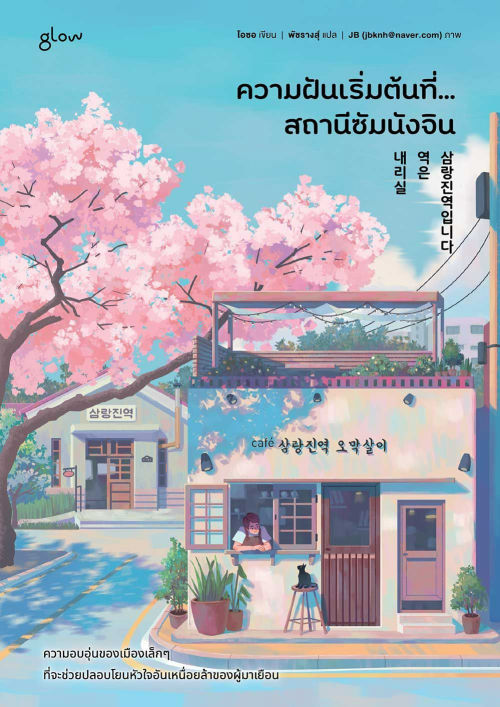
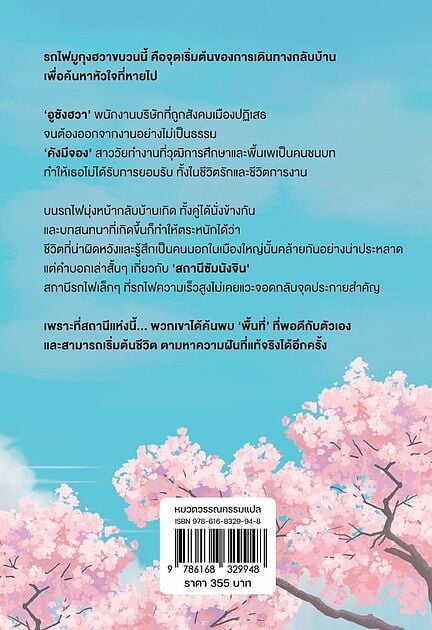

<!DOCTYPE html>
<html lang="th">

<head>
    <meta charset="UTF-8">
    <meta name="viewport" content="width=device-width, initial-scale=1.0">

    <title>ความฝันเริ่มต้นที่...สถานีซัมนังจิน | Book Journal</title>

    <!-- Google Fonts -->
    <link rel="preconnect" href="https://fonts.googleapis.com">
    <link rel="preconnect" href="https://fonts.gstatic.com" crossorigin>
    <link
        href="https://fonts.googleapis.com/css2?family=Noto+Sans+Thai:wght@300;400;500;600;700&family=Noto+Serif+Thai:wght@400;500;600;700&display=swap"
        rel="stylesheet">

    <!-- Bootstrap 5 -->
    <link href="https://cdn.jsdelivr.net/npm/bootstrap@5.3.3/dist/css/bootstrap.min.css" rel="stylesheet">
    <!-- Decorative Icons -->
    <link rel="stylesheet" href="https://cdn.jsdelivr.net/npm/bootstrap-icons@1.11.3/font/bootstrap-icons.min.css">
    <!-- Custom CSS -->
    <link rel="stylesheet" href="style.css">


    <!-- Scroll Reveal JavaScript -->
    <script>
        document.addEventListener("DOMContentLoaded", function () {

            const elements = document.querySelectorAll(".reveal");

            // ตรวจสอบการตั้งค่าลดการเคลื่อนไหวของผู้ใช้
            const reduceMotion = window.matchMedia(
                "(prefers-reduced-motion: reduce)"
            ).matches;

            // แสดงเนื้อหาทั้งหมดทันที หากไม่รองรับการเคลื่อนไหว
            if (
                reduceMotion ||
                !("IntersectionObserver" in window)
            ) {
                elements.forEach(function (element) {
                    element.classList.add("is-visible");
                });
                return;
            }

            // ตรวจจับทั้งตอนเลื่อนเข้ามาและเลื่อนออกจากหน้าจอ
            const observer = new IntersectionObserver(
                function (entries) {
                    entries.forEach(function (entry) {

                        if (entry.isIntersecting) {
                            // เข้ามาในหน้าจอ: เฟดเข้า
                            entry.target.classList.add("is-visible");
                        } else {
                            // ออกจากหน้าจอ: เฟดออก
                            entry.target.classList.remove("is-visible");
                        }

                    });
                },
                {
                    threshold: 0.08,
                    rootMargin: "0px 0px -35px 0px"
                }
            );

            // สังเกตทุก element ตลอดเวลา ไม่ยกเลิกหลังแสดงครั้งแรก
            elements.forEach(function (element) {
                observer.observe(element);
            });

        });
    </script>
    </body>

</html>

<!-- ==================================================
     NAVIGATION
================================================== -->
<nav class="navbar navbar-expand-lg sticky-top site-navbar">
    <div class="container">

        <a class="navbar-brand brand-logo" href="#home" aria-label="กลับหน้าแรก">
            <span>Balook</span>
            <small>BOOK JOURNAL</small>
        </a>

        <button class="navbar-toggler" type="button" data-bs-toggle="collapse" data-bs-target="#mainNavigation"
            aria-controls="mainNavigation" aria-expanded="false" aria-label="เปิดเมนูนำทาง">
            <span class="navbar-toggler-icon"></span>
        </button>

        <div class="collapse navbar-collapse" id="mainNavigation">
            <ul class="navbar-nav ms-auto">
                <li class="nav-item">
                    <a class="nav-link" href="#story">เรื่องราว</a>
                </li>
                <li class="nav-item">
                    <a class="nav-link" href="#characters">ตัวละคร</a>
                </li>
                <li class="nav-item">
                    <a class="nav-link" href="#benefits">ประโยชน์</a>
                </li>
                <li class="nav-item">
                    <a class="nav-link" href="#summary">บทสรุป</a>
                </li>
            </ul>
        </div>

    </div>
</nav>


<main>

    <!-- ==================================================
         HERO
    ================================================== -->
    <header id="home" class="hero-section">
        <div class="container">
            <div class="row align-items-center g-5">

                <div class="col-lg-6 reveal reveal-left">
                    <div class="hero-text">


                        <p class="eyebrow">BOOK / JOURNEY / HEALING</p>

                        <h1 class="hero-title">
                            ความฝันเริ่มต้นที่...
                            <span>สถานีซัมนังจิน</span>
                        </h1>

                        <p class="hero-lead">
                            ในวันที่เมืองใหญ่ไม่มีที่ยืนให้คุณ...
                            ลองแวะพักที่สถานีรถไฟสายนี้ดูไหม?
                        </p>

                        <p class="hero-description">
                            เมื่อชีวิตในสังคมที่หมุนไปอย่างรวดเร็ว
                            ทำให้คุณเหนื่อยล้า จนรู้สึกว่าตัวเองเป็นเพียง
                            “คนแปลกหน้า” และไม่มีพื้นที่พอดีให้ยืนหยัด
                        </p>

                        <div class="hero-buttons">
                            <a href="#story" class="btn btn-main">
                                ทำความรู้จักหนังสือ
                            </a>
                            <a href="#benefits" class="btn btn-outline-main">
                                ทำไมจึงควรอ่าน?
                            </a>
                        </div>

                    </div>
                </div>

                <div class="col-lg-6 reveal reveal-right">
                    <div class="book-stage">

                        <div class="book-circle" aria-hidden="true"></div>

                        <div class="book-frame">
                            
                        </div>

                        <div class="book-label">
                            <strong>SAMNANGJIN</strong>
                            <span>A LITTLE STATION</span>
                        </div>

                    </div>
                </div>

            </div>
        </div>
    </header>


    <!-- ==================================================
         INTRODUCTION
    ================================================== -->
    <section class="topics-section">
        <div class="container">

            <div class="topics-box reveal">
                <div class="row align-items-center g-4">

                    <div class="col-lg-4">
                        <p class="section-label">A MOMENT TO PAUSE</p>

                        <h2>
                            เมื่อความเร็วของโลก
                            ไม่ได้เท่ากับ
                            ความเร็วของหัวใจ
                        </h2>
                    </div>

                    <div class="col-lg-8">
                        <p>
                            บางทีคำตอบของการตามหาความฝัน
                            อาจไม่ใช่การวิ่งให้เร็วขึ้น
                            แต่อาจเป็นการยอมถอยหนึ่งก้าว
                            เพื่อกลับมาทบทวนหัวใจตัวเอง
                        </p>

                        <p class="mb-0">
                            หนังสือเล่มนี้ชวนเราออกจากความวุ่นวาย
                            ไปสู่สถานีเล็ก ๆ ที่ชื่อว่า “ซัมนังจิน”
                            พื้นที่ที่เปิดโอกาสให้ผู้คนได้พักหายใจ
                            และเริ่มต้นใหม่อีกครั้ง
                        </p>
                    </div>

                </div>
            </div>

        </div>
    </section>


    <!-- ==================================================
         QUOTE
    ================================================== -->
    <section class="quote-section">
        <div class="container">

            <div class="quote-paper reveal">
                <div class="quote-flower" aria-hidden="true">✿</div>

                <p class="quote-text">
                    “บางครั้งการหยุดพัก
                    ก็เป็นส่วนหนึ่งของการเดินทาง”
                </p>

                <span class="quote-en">
                    SOMETIMES, SLOWING DOWN IS THE BEGINNING.
                </span>
            </div>

        </div>
    </section>


    <!-- ==================================================
         SECTION 01 : STORY
    ================================================== -->
    <section id="story" class="content-section story-section">

        <div class="container">

            <div class="section-number reveal" aria-label="Section 01">
                <span>01</span>
                <small>STORY</small>
            </div>

            <div class="section-heading reveal">
                <p class="section-label">ABOUT THE STORY</p>

                <h2>
                    ในวันที่เมืองใหญ่
                    ไม่มีที่ยืนให้คุณ
                </h2>
            </div>

            <div class="row g-0 story-layout">

                <div class="col-lg-7 reveal reveal-left">
                    <div class="story-text-box">

                        <p class="lead">
                            เมื่อชีวิตในสังคมที่หมุนไปอย่างรวดเร็ว
                            ทำให้คุณเหนื่อยล้า จนรู้สึกว่าตัวเองเป็นเพียง
                            “คนแปลกหน้า”
                        </p>

                        <p>
                            และไม่มีพื้นที่พอดีให้ยืนหยัด
                            บางทีคำตอบของการตามหาความฝัน
                            อาจไม่ใช่การวิ่งให้เร็วขึ้น
                            แต่อาจเป็นการยอมถอยหนึ่งก้าว
                            เพื่อกลับมาทบทวนหัวใจตัวเอง
                        </p>

                        <p>
                            ผลงานจากนักเขียน โอซอ (Oh Seo)
                            ถ่ายทอดเรื่องราวผ่านการเดินทางบนรถไฟสายธรรมดา
                            ที่ไม่ได้เร่งรีบ พร้อมพาผู้อ่านไปพบกับผู้คน
                            ซึ่งต่างกำลังค้นหาพื้นที่ของตัวเอง
                        </p>

                        <div class="story-highlight">
                            <span aria-hidden="true">“</span>
                            <p>
                                การหยุดพักไม่ได้หมายความว่า
                                เราหยุดฝัน
                            </p>
                            <span aria-hidden="true">”</span>
                        </div>

                    </div>
                </div>

                <div class="col-lg-5 reveal reveal-right">
                    <div class="story-visual">

                        <div class="station-circle">
                            <div class="station-icon" aria-hidden="true">🚉</div>
                            <span>SAMNANGJIN</span>
                        </div>

                        <div class="visual-note note-one">slow down</div>
                        <div class="visual-note note-two">take a breath</div>
                        <div class="visual-note note-three">begin again</div>

                    </div>
                </div>

            </div>

        </div>

        <div class="pink-stripe" aria-hidden="true">
            <div class="container">
                <div class="stripe-line"></div>
            </div>
        </div>

        <div class="grid-paper">
            <div class="container">
                <p>A SMALL STATION FOR A TIRED HEART.</p>
            </div>
        </div>

    </section>


    <!-- ==================================================
         SECTION 02 : CHARACTERS
    ================================================== -->
    <section id="characters" class="content-section characters-section">

        <div class="container">

            <div class="section-number section-number-purple reveal" aria-label="Section 02">
                <span>02</span>
                <small>PEOPLE</small>
            </div>

            <div class="row align-items-center g-5">

                <div class="col-lg-5 reveal reveal-left">
                    <figure class="book-image">
                        
                    </figure class="image-credit">
                    ภาพ: © 1999-2026 Amarin Book Center Co.,Ltd.
                    </figcaption>
                    </figure>
                </div>

                <div class="col-lg-7">

                    <div class="section-heading reveal">
                        <p class="section-label">MEET THE CHARACTERS</p>

                        <h2>
                            คนสองคน
                            บนรถไฟขบวนเดียวกัน
                        </h2>
                    </div>

                    <div class="character-list">

                        <article class="character-item reveal">
                            <div class="character-number">01</div>

                            <div>
                                <h3>อูชังฮวา</h3>
                                <p>
                                    พนักงานบริษัทที่ถูกผลักไสจากเมืองใหญ่
                                    อย่างไม่เป็นธรรม เขาต้องเผชิญกับความรู้สึก
                                    ว่าตัวเองไม่มีที่ยืนในสังคม
                                </p>
                            </div>
                        </article>

                        <article class="character-item reveal">
                            <div class="character-number">02</div>

                            <div>
                                <h3>คังมีจอง</h3>
                                <p>
                                    หญิงสาวที่แบกรับปมด้อยเรื่องวุฒิการศึกษา
                                    และพื้นเพชีวิต แต่ยังคงค้นหาคุณค่า
                                    และพื้นที่ที่เหมาะสมกับตัวเอง
                                </p>
                            </div>
                        </article>

                    </div>

                    <div class="train-message reveal">
                        <span aria-hidden="true">→</span>
                        <p>
                            การพบกันโดยบังเอิญบนขบวนรถไฟ
                            นำมาซึ่งบทสนทนาที่เรียบง่ายแต่บาดลึก
                            และสะท้อนความกดดันของคนวัยทำงาน
                        </p>
                    </div>

                </div>
            </div>
        </div>
    </section>


    <!-- ==================================================
         SECTION 03 : BENEFITS
    ================================================== -->
    <section id="benefits" class="content-section benefits-section">

        <div class="container">

            <div class="section-number reveal" aria-label="Section 03">
                <span>03</span>
                <small>BENEFITS</small>
            </div>

            <div class="section-heading text-center reveal">
                <p class="section-label">WHY THIS BOOK?</p>

                <h2>
                    ทำไมจึงควรอ่าน
                    “ความฝันเริ่มต้นที่...สถานีซัมนังจิน”
                </h2>

                <p class="heading-description">
                    เพราะบางครั้งสิ่งที่เราต้องการที่สุด
                    ไม่ใช่คำตอบของชีวิต แต่คือพื้นที่เล็ก ๆ
                    ที่ทำให้เรากลับมาได้ยินเสียงของตัวเอง
                </p>
            </div>

            <div class="benefit-grid">

                <article class="benefit-card benefit-blue reveal reveal-delay-1">

                    <div class="benefit-top">
                        <span class="benefit-number">01 / HEALING</span>
                        <span class="benefit-icon" aria-hidden="true">
                            <i class="bi bi-flower1"></i>
                        </span>
                    </div>

                    <h3>ฮีลใจและปลอบประโลม</h3>

                    <p>
                        ช่วยโอบกอดความรู้สึกผิดหวัง พ่ายแพ้
                        หรือความรู้สึกเป็น “คนนอก” ในสังคม
                        ให้กลับมารู้สึกอบอุ่นและมีแรงขับเคลื่อน
                    </p>
                </article>

                <article class="benefit-card benefit-pink reveal reveal-delay-2">
                    <div class="benefit-top">
                        <span class="benefit-number">02 / PERSPECTIVE</span>
                        <span class="benefit-icon" aria-hidden="true"><i class="bi bi-cloud-sun"></i></span>
                    </div>

                    <h3>สร้างมุมมองใหม่</h3>

                    <p>
                        ช่วยให้ตระหนักว่าความสำเร็จไม่ได้มีรูปแบบเดียว
                        และการพักผ่อนหรือหยุดเดินชั่วคราว
                        ไม่ได้หมายความว่าเราล้มเหลว
                    </p>
                </article>

                <article class="benefit-card benefit-cream reveal reveal-delay-3">
                    <div class="benefit-top">
                        <span class="benefit-number">03 / SELF-WORTH</span>
                        <span class="benefit-icon" aria-hidden="true"><i class="bi bi-heart"></i></span>
                    </div>

                    <h3>เข้าใจคุณค่าของตัวเอง</h3>

                    <p>
                        กระตุ้นให้เลิกใช้มาตรฐานของคนอื่น
                        มาวัดคุณค่าชีวิต และหันมาโอบรับตัวตน
                        ในแบบที่เราเป็น
                    </p>
                </article>

            </div>
        </div>
    </section>


    <!-- ==================================================
         SECTION 04 : SUMMARY
    ================================================== -->
    <section id="summary" class="summary-section">

        <div class="container">

            <div class="summary-box reveal">
                <div class="row align-items-center g-5">

                    <div class="col-lg-5">
                        <p class="section-label">FINAL THOUGHT</p>

                        <h2>
                            ทุกคนมี
                            <span>“พื้นที่ที่พอดีกับตัวเอง”</span>
                        </h2>

                        <div class="summary-line"></div>
                    </div>

                    <div class="col-lg-7">

                        <p class="summary-lead">
                            “ความฝันเริ่มต้นที่...สถานีซัมนังจิน”
                            ไม่ใช่เพียงวรรณกรรมสร้างแรงบันดาลใจทั่วไป
                            แต่เปรียบเสมือนสถานีพักใจชั่วคราว
                            ให้ผู้เดินทางที่อ่อนล้าได้ทิ้งความกดดันไว้เบื้องหลัง
                        </p>

                        <p>
                            หนังสือเล่มนี้คอยย้ำเตือนเราว่า
                            ไม่ว่าโลกภายนอกจะหมุนเร็วแค่ไหน
                            หรือเราจะสะดุดล้มมามากเพียงใด
                            ทุกคนก็มีพื้นที่ที่เหมาะสมกับตัวเอง
                        </p>

                        <p class="mb-0">
                            ขอเพียงแค่กล้าที่จะเปิดใจ
                            รับฟังเสียงเล็ก ๆ จากหัวใจตัวเองอีกครั้ง
                        </p>

                    </div>
                </div>
            </div>

        </div>
    </section>


    <!-- ==================================================
         FINAL CALL TO ACTION
    ================================================== -->
    <section class="final-section">
        <div class="container">

            <div class="final-content reveal">
                <p class="section-label">NEXT STOP</p>

                <h2>
                    ถึงเวลาพัก
                    แล้วเริ่มต้นใหม่อีกครั้ง
                </h2>

                <p>
                    บางทีความฝันของคุณอาจไม่ได้อยู่ที่ปลายทาง
                    แต่อาจเริ่มต้นขึ้นในระหว่างทาง
                </p>

                <a href="#home" class="btn btn-light final-button">
                    กลับไปที่จุดเริ่มต้น ↑
                </a>
            </div>

        </div>
    </section>

</main>


<!-- ==================================================
     FOOTER
================================================== -->
<footer class="site-footer">
    <div class="container">

        <div class="row align-items-center g-3">

            <div class="col-md-6">
                <div class="footer-logo">Balook</div>
                <small>BOOK JOURNAL</small>
            </div>

            <div class="col-md-6 text-md-end">
                <small>A LITTLE STATION FOR A TIRED HEART.</small>
            </div>

        </div>

    </div>
</footer>


<!-- Bootstrap JavaScript -->
<script src="https://cdn.jsdelivr.net/npm/bootstrap@5.3.3/dist/js/bootstrap.bundle.min.js"></script>

<!-- Scroll Reveal JavaScript -->
<script>
    document.addEventListener("DOMContentLoaded", function () {

        const elements = document.querySelectorAll(".reveal");

        // แสดงเนื้อหาทันทีหากผู้ใช้ปิดการเคลื่อนไหวไว้
        const reduceMotion = window.matchMedia(
            "(prefers-reduced-motion: reduce)"
        ).matches;

        if (reduceMotion || !("IntersectionObserver" in window)) {
            elements.forEach(function (element) {
                element.classList.add("is-visible");
            });
            return;
        }

        const observer = new IntersectionObserver(
            function (entries, currentObserver) {
                entries.forEach(function (entry) {
                    if (entry.isIntersecting) {
                        entry.target.classList.add("is-visible");
                        currentObserver.unobserve(entry.target);
                    }
                });
            },
            {
                threshold: 0.08,
                rootMargin: "0px 0px -35px 0px"
            }
        );

        elements.forEach(function (element) {
            observer.observe(element);
        });

    });
</script>

</body>

</html>